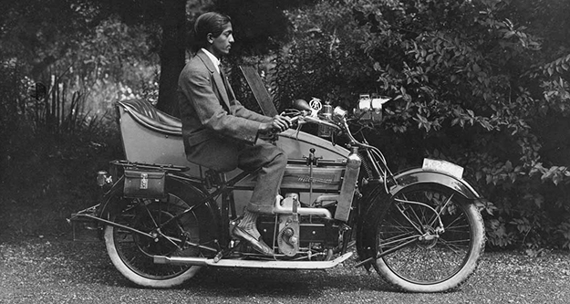

I wonder if we have ever asked ourselves what education means. Why do we go to school, why do we learn various subjects, why do we pass examinations and compete with each other for better grades? What does this so-called education mean, and what is it all about? This is really a very important question, not only for the students, but also for the parents, for the teachers, and for everyone who loves this earth. Why do we go through the struggle to be educated? Is it merely in order to pass some examinations and get a job? Or is it the function of education to prepare us while we are young to understand the whole process of life? Having a job and earning one's livelihood is necessary - but is that all? Are we being educated only for that? Surely, life is not merely a job, an occupation; life is something extraordinarily wide and profound, it is a great mystery, a vast realm in which we function as human beings. If we merely prepare ourselves to earn a livelihood, we shall miss the whole point of life; and to understand life is much more important than merely to prepare for examinations and become very proficient in mathematics, physics, or what you will.
So, whether we are teachers or students, is it not important to ask ourselves why we are educating or being educated? And what does life mean? Is not life an extraordinary thing? The birds, the flowers, the flourishing trees, the heavens, the stars, the rivers and the fish therein - all this is life. Life is the poor and the rich; life is the constant battle between groups, races and nations; life is meditation; life is what we call religion, and it is also the subtle, hidden things of the mind - the envies, the ambitions, the passions, the fears, fulfilments and anxieties. All this and much more is life. But we generally prepare ourselves to understand only one small corner of it. We pass certain examinations, find a job, get married, have children, and then become more and more like machines. We remain fearful, anxious, frightened of life. So, is it the function of education to help us understand the whole process of life, or is it merely to prepare us for a vocation, for the best job we can get?
What is going to happen to all of us when we grow to be men and women? Have you ever asked yourselves what you are going to do when you grow up? In all likelihood you will get married, and before you know where you are you will be mothers and fathers; and you will then be tied to a job, or to the kitchen, in which you will gradually wither away. Is that all that your life is going to be? Have you ever asked yourselves this question? Should you not ask it? If your family is wealthy you may have a fairly good position already assured, your father may give you a comfortable job, or you may get richly married; but there also you will decay, deteriorate. Do you see?
Surely, education has no meaning unless it helps you to understand the vast expanse of life with all its subtleties, with its extraordinary beauty, its sorrows and joys. You may earn degrees, you may have a series of letters after your name and land a very good job; but then what? What is the point of it all if in the process your mind becomes dull, weary, stupid? So, while you are young, must you not seek to find out what life is all about? And is it not the true function of education to cultivate in you the intelligence which will try to find the answer to all these problems? Do you know what intelligence is? It is the capacity, surely, to think freely without fear, without a formula, so that you begin to discover for yourself what is real, what is true; but if you are frightened you will never be intelligent. Any form of ambition, spiritual or mundane, breeds anxiety, fear; therefore ambition does not help to bring about a mind that is clear, simple, direct, and hence intelligent.
You know, it is really very important while you are young to live in an environment in which there is no fear. Most of us, as we grow older, become frightened; we are afraid of living, afraid of losing a job, afraid of tradition, afraid of what the neighbours, or what the wife or husband would say, afraid of death. Most of us have fear in one form or another; and where there is fear there is no intelligence. And is it not possible for all of us, while we are young, to be in an environment where there is no fear but rather an atmosphere of freedom - freedom, not just to do what we like, but to understand the whole process of living? Life is really very beautiful, it is not this ugly thing that we have made of it; and you can appreciate its richness, its depth, its extraordinary loveliness only when you revolt against everything - against organized religion, against tradition, against the present rotten society - so that you as a human being find out for yourself what is true. Not to imitate but to discover - that is education, is it not? It is very easy to conform to what your society or your parents and teachers tell you. That is a safe and easy way of existing; but that is not living, because in it there is fear, decay, death. To live is to find out for yourself what is true, and you can do this only when there is freedom, when there is continuous revolution inwardly, within yourself.